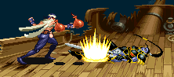

|
|
TEL'ARIN VS THIEF
※ 이 곳의 방법이 공략법의 전부는 아닙니다. 참고는 하되 자신만의 방법을 개발 해 보길 바랍니다.
시프의 텔'아린 최단 시간 클리어 기록 : 4:47
참고사항
어떻게 보면 전 클래스 중 상성이 가장 안좋다. 기본 무기인 노멀 소드가 1레벨이라 공격력이 가장 약한대다가 쓸만한 콤보도 마땅치 않기 때문이다. 그로 인해 자칫 잘못하면 텔'아린이 헤이스트를 시전하는 상황이 연출 될 수 있다. 헤이스트를 시전했을 때 피하기가 가장 어렵다는 점도 안좋게 작용한다.
오일을 이용한 기본 공략법
쓸만한 콤보는 'A → 강공격 → 슬래쉬 → 대공기'콤보 한가지 이다. 건틀렛이 부셔졌거나 브레슬렛을 착용하고 있다면 콤보를 제대로 넣지 못할 수록 더욱 불리해지니 확실하게 콤보를 넣을 수 있도록 연습하는게 좋다.
텔'아린이 나타나면 콤보 두셋트를 확실하게 넣자. 첫번째 콤보를 넣을 때 콤보를 넣는 타이밍에 따라 텔'아린이 쓰러지는 위치가 달라질텐데 영상처럼 확실하게 넣으면 뒤를 잡을 공간이 생기지만 아니면 구석 끝에 위치하게 되서 뒤를 잡을 수 없게 된다. - 어슬프게 뒤를 잡으려 하다가는 슬래쉬에 맞는다. - 될 수 있는한 콤보를 정확하게 넣도록 특히 노력하자. 콤보 두세트를 넣었으면 준비한 오일을 던지고 다운 공격을 넣는다. 행여나 오일을 잘못 던지면 텔'아린이 애니메이트 데드를 시전하게 되니 실수하지 않도록 차근 차근 던지도록 하자. 적들이 오일을 맞으면 쓰러지는 위치가 약간 위로 올라가니 참고하도록 한다. 메인 페이지의 1인 플레이시 클리어 조건의 HP를 참고해서 그정도 수준까지 HP가 떨어질 때 까지 오일공격을 하고 텔'아린이 애니메이트 데드를 시전한 후 넘어뜨리고 한대를 더 때려주거나 혹은 영상처럼 1줄이하로 남았을 때까지 오일을 공격을 하고 콤보 한세트를 넣은 후 한대를 더 때려주면 된다. - 콤보에 자신이 없다면 그냥 오일을 다 쓰도록 한다. ※ A+B는 선택사항이다. 파이어 로드가 없다 하더라도 일반 다운 공격보다는 더 높은 데미지를 준다. 이 스테이지를 클리어하면 HP가 일정량 다시 차니 여유가 있다면 오일 투척할 때를 제외하면 다운 공격은 A+B를 사용하는게 좋다. * 영상 정보 - 플레이어 crassus / 클리어 시간 4:09 * 단검을 이용한 공략법
혹 이전 하피와의 싸움에서 단검을 쓰지 않고 왔다면 오일을 이용한 공략보다 더 빠른 공략을 할 수 있다.
위 공략법에서 오일 투척 후 다운 공격 대신에 단검을 던지면 된다. 영상처럼 첫번째 콤보를 넣은 후 단검을 던져도 된다. 다만 단검 9개의 데미지가 오일 투척 후 다운 공격을 할 때의 데미지 보다 더 적다. 콤보를 제대로 넣지 못하면 데미지가 부족하여 텔'아린이 헤이스트를 시전할 수 있다는 뜻이다. 그러니 콤보를 확실하게 넣을 수 있을 때 이 방법을 쓰는게 좋다. * 영상 정보 - 플레이어 crassus / 클리어 시간 4:19 * 숏 소드와 파이어 로드의 활용
노멀 소드 1레벨 보다 숏 소드 2레벨의 데미지가 더 높다. 따라서 숏 소드를 이용한다면 콤보 데미지가 더 높아진다. 텔'아린과의 싸움에서 고전한다면 숏 소드를 가져오는 것도 좋은 방법이다.
공략법 자체는 위에서 소개한 공략법들과 같다. 파이어 로드가 있다면 A+B의 위력이 더욱 강력 해지니 파이어 로드를 얻기 위해 스테이지 3-A(저거노트)를 가 보는 것도 좋다. * 영상 정보 - 플레이어 crassus / 클리어 시간 4:31 * 대공기를 쓰지 않은 이유는 클리어 시간을 줄이기 위함이다. 실전에서는 대공기까지 착실하게 넣는게 좋다. LB오일을 이용한 공략법
스테이지 3-A(저거노트 전차)에서 LB오일을 2개 이상 훔치고 파이어 로드를 얻었다면 쓸만한 방법이다.

콤보 한세트를 넣은 후 A+B를 다운 공격으로 넣고 두번째 콤보는 그냥 A공격으로 3히트를 넣는다. 강공격을 넣으면 추가 히트가 가능하다. A공격만 하는 이유는 슬래쉬나 대공기로 콤보를 이으면 때에 따라 LB오일을 넣기 힘들 수 있기 때문이다. 오른쪽 스샷을 참고하여 LB오일을 2~3개 투척 한다.그 후에는 콤보 한세트를 넣고 한대 더 때려주면 된다. 만약 데미지가 부족하다 싶으면 콤보를 넣은 후에 A+B를 또 넣어주면 된다. LB오일 5개가 있다면 아래 영상과 같이 적당한 공격으로 쓰러뜨리고 5개를 다 던진 후 몇번의 공격만으로 텔'아린을 보낼 수 있다. 텔'아린이 영 힘들다면 이 방법도 써볼만 하다. LB오일을 어디다 쓰는 것이 좋을지를 판단하는 것은 플레이어의 몫이다. ★ 팁 한가지 : LB오일의 상세 정보를 봤다면 알겠지만 연사속도를 12로 맞춰놓고 투척하면 데미지가 더 늘어난다. 연사기능을 쓰고 속도를 빨리 바꿀줄 안다면 한번 속도를 바꾸고 던져봄직도 하다. * 영상 정보 - 플레이어 : crassus / 클리어 시간 4:47 * 영상과 같은 기록은 힘들어도 40초대 초반은 기대 해 볼 수 있다. 기본 무기만으로 때려 잡기
건틀렛과 파이어 로드의 유무 차이가 제법 크다. 있다면 적당히 콤보를 4번 넣고 A+B를 곁들이면 충분한데 없다면 제대로 콤보를 넣어도 대부분은 헤이스트를 보게 된다.
브레슬렛만 있다는 가정하에 헤이스트를 안보는 걸 목표로 해보자. 일단 아래쪽의 1p 장비창과 2p 장비창의 경계선(혹은 3p, 4p의 경계선-한마디로 화면의 절반)을 기준으로 해서 그 선까지 HP를 줄이도록 하자. 데미지 조정이 힘들면 아래 영상처럼 'A → 강공격 → 슬래쉬 → 대공기' 콤보를 한번 넣고 그다음에는 일반 A공격과 다운공격으로 적절히 조절한다. 그 후 부터 본게임의 시작인데 'A → 강공격 → 슬래쉬 → 대공기' 콤보를 1히트도 빼먹지 말고 다 명중시키고 A+B를 다운공격으로 넣는다. 그 후에는 'A → 강공격 → 슬래쉬 → 대공기 → A+B 다운공격'을 두번 제대로 넣으면 아슬아슬하게 텔'아린이 도망갈 것이다. 스켈레톤이 방해 될텐데 시간이 급한게 아니라면 1마리만 남겨놓고 먼저 제거하는것도 괜찮다. 다시 정리 해 보면 화면의 절반을 기준선으로 그정도까지 HP를 줄여 놓고 그 후에 'A → 강공격 → 슬래쉬 → 대공기 → A+B 다운공격'을 세번을 정확하게 넣으면 목표 달성 이다. ★ 헤이스트를 썼을 때의 대처법은 메인 페이지의 헤이스트 분석에 첨부 되어 있다. * 영상 정보 - 플레이어 legon / 클리어 시간 4:13 * 빠른 클리어 위주의 공략법
★ 이번에 소개할 방법들은 실용성이 떨어진다. '이런 방법이 있구나' 정도로만 보기 바란다.
먼저 해머 2히트를 이용한 방법이다. 영상과 같은 위치에서 던지면 2히트가 가능하다. 이것을 이용하여 많은 데미지를 입히고 은단검을 던져서 텔'아린의 HP를 40%가까이 떨어뜨리고 애니메이트 데드 시전 후 두대를 더 때리는 것으로 도망치게 만든다. 은단검 모아오기가 쉬운 일이 아니고 해머 던질 자리를 잘못 잡으면 안쓰니만 못한 상황을 만들 수도 있기 때문에 실용성도 별로 없고 성공률이 좋은 방법은 아니다. * 영상 정보 - 플레이어 : crassus / 클리어 시간 4:41 * 해머 2히트와 LB오일을 이용한 방법이다. 위의 방법과 같은 방식으로 해머를 2히트 시키고 쓰러뜨린 후 LB오일을 5개 던진다. 약간 느리게 던진다는 느낌을 받을 수 있을텐데 에뮬레이터의 연사 속도를 12로 맞춘 것이다. 현실성이 많이 떨어지므로 그냥 텔'아린의 HP를 전부 소진시키면서 빠르게 클리어 하는 방법 정도로만 보기 바란다. * 영상 정보 - 플레이어 : legon / 클리어 시간 4:47 * |